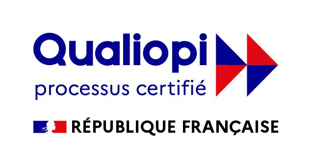

CPF
Compte Personnel de FormationUtilisez vos droits acquis pour couvrir tout ou partie des frais. Nos formations sont 100 % éligibles au CPF.
Éligibles CPF, finançables par OPCO, FAF ou France Travail. 100 % à distance.
Formation sur mesure : parlons-enMaîtrisez les outils indispensables du Pack Office pour gagner en efficacité et en autonomie dans votre quotidien professionnel.
La maîtrise du Pack Office est aujourd’hui un indispensable dans tous les secteurs d’activité. Se former à Microsoft Office, c’est bien plus que savoir utiliser des logiciels : c’est apprendre à organiser, présenter, analyser et communiquer efficacement. Que vous soyez professionnel, entrepreneur ou simplement désireux de gagner en autonomie numérique, une formation Pack Office vous offre un avantage concret pour optimiser votre travail, structurer vos projets et collaborer plus efficacement.
Dans un monde où la communication écrite reste essentielle, maîtriser Microsoft Word est une compétence incontournable. Débutant ou confirmé, gagnez en efficacité et en autonomie.
En savoir plus
Maîtriser Excel, c’est gagner du temps, analyser mieux et prendre des décisions plus vite. Des compétences concrètes, immédiatement applicables.
En savoir plus
Teams, SharePoint, OneDrive, Planner, Delve : communiquer, partager et collaborer efficacement avec votre équipe.
En savoir plus80 % de la formation en visio synchrone en petit groupe, animée en direct par un formateur, et 20 % en e-learning via notre plateforme.
Pour les profils autonomes, une version intégralement en ligne, accessible 24 h/24 et 7 j/7.
À l’issue de la formation, vous pourrez obtenir la certification officielle reconnue par France Compétences, qui attestera des compétences acquises durant la formation.
Notre formation a été conçue pour répondre aux besoins des professionnels et des entreprises dans un monde où la maîtrise des outils numériques est essentielle. Les deux formats garantissent la même qualité pédagogique, avec des contenus identiques, un suivi personnalisé et l’accès aux supports et outils professionnels.
Profitez d’une formation certifiée répondant aux standards de qualité les plus exigeants. Grâce à son éligibilité au CPF, vous pouvez financer tout ou partie de votre parcours.
Vous n’êtes jamais seul : un formateur expert vous accompagne tout au long de votre parcours, avec des conseils personnalisés et un suivi régulier.
Dans un monde professionnel où l’efficacité et la maîtrise des outils numériques font la différence, les compétences en Pack Office ne sont plus un simple atout, mais une exigence. Elles sont indispensables dans des postes tels que :
Que vous soyez en poste, en reconversion ou indépendant(e), la maîtrise du Pack Office vous permet de :
Financer votre formation n’a jamais été aussi simple ! Voici les principales options à votre disposition. Nos conseillers vous accompagnent dans vos démarches.
Utilisez vos droits acquis pour couvrir tout ou partie des frais. Nos formations sont 100 % éligibles au CPF.
Salarié ? Votre entreprise peut financer votre formation grâce aux aides des OPCO.
Indépendant ? Les FAF prennent en charge vos formations pour développer vos compétences.
En recherche d’emploi ? Profitez des aides spécifiques comme l’AIF pour accéder à nos programmes.
Je recommande vivement ce centre de formation ! Les formateurs sont compétents, pédagogues et toujours à l’écoute. Le contenu des formations est riche et bien structuré. Merci à M. Romito et son équipe !
Super centre de formation qui vous conseille et vous accompagne même pour les prises en charge. Les dossiers de prise en charge, surtout dans le domaine du bâtiment, sont très compliqués mais ils ont pris le temps de tout nous expliquer. Je suis super satisfait et je repasserai par eux les prochaines fois.
Je recommande vivement Konig Formation ! Pédagogie, professionnalisme, expérience, formateurs compétents et à l’écoute : tout est réuni pour acquérir de nouvelles compétences.
Une formation de qualité avec un environnement agréable et des formateurs au top du top ! Je recommande fortement.
Pour ma formation tout s’est très bien passé. Une équipe efficace de A à Z. Très bonne écoute de la part de l’équipe pédagogique. Merci.
Super centre de formation, très à l’écoute de nos besoins et s’adapte à notre situation pro. Je recommande la formation Community Management.
J’ai eu le plaisir de collaborer avec Konig Formation pour la création de leur site internet. Une superbe collaboration avec une entreprise engagée dans la montée en compétences de ses apprenants ! Je recommande Konig Formation à 100 % pour leur sérieux et la qualité de leur accompagnement.
Ils ont su adapter parfaitement mon parcours de formation à ma demande.
Formation au top ainsi que les formateurs, très à l’écoute. Je recommande.
Rien à dire, au top !
Besoin d’aide pour choisir votre formation ? Notre équipe vous accompagne dans le choix de la formation idéale et dans vos démarches de financement (CPF, OPCO, FAF, France Travail).

« Certifié conformément aux exigences du Référentiel National de Certification Qualité des organismes mentionnés à l’article L.6351-1 du Code du travail. La certification qualité a été délivrée au titre de la ou des catégories d’actions suivantes : actions de formation (OF – L.6313-1, 1°) » Télécharger le certificat